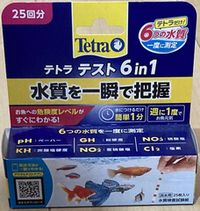
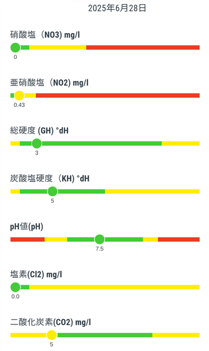

水の補充と水質チェック
雨の降らない日が続いて池の水が減ったら、雨水かカルキ抜きした水道水を補充している。
環境変化に敏感なヌマエビが元気なので大丈夫と考えているが、定期的にテトラの水質検査試験紙「テスト6in1」で水質をチェックしている。

硝酸塩・亜硝酸塩・総硬度・炭酸塩硬度・pH値・塩素および二酸化炭素を測ることができる。
アンモニア→亜硝酸塩→硝酸塩というバクテリアによる生物濾過と水草による硝酸塩の吸収がうまく機能しているかどうかが分かり、
換水の必要性を判断できる。
水質検査結果の例

結果は概ね良好だが亜硝酸塩濃度が若干高めになっている。 この時は水中ポンプが少し詰まり気味で水流が弱くなっていたため、生物濾過を強化すべく水中ポンプと濾過器を掃除した。
結果は概ね良好だが亜硝酸塩濃度が若干高めになっている。 この時は水中ポンプが少し詰まり気味で水流が弱くなっていたため、生物濾過を強化すべく水中ポンプと濾過器を掃除した。